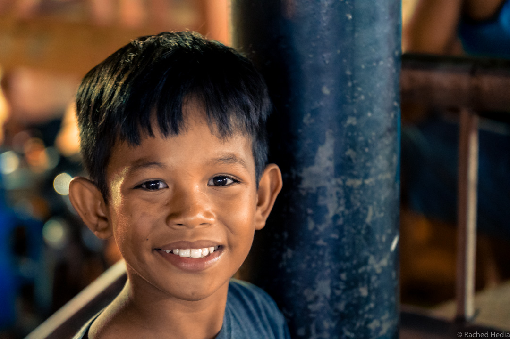
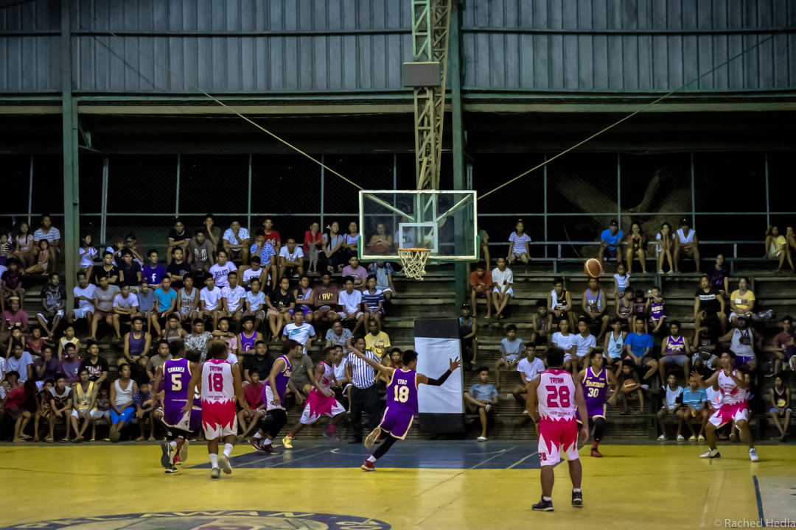
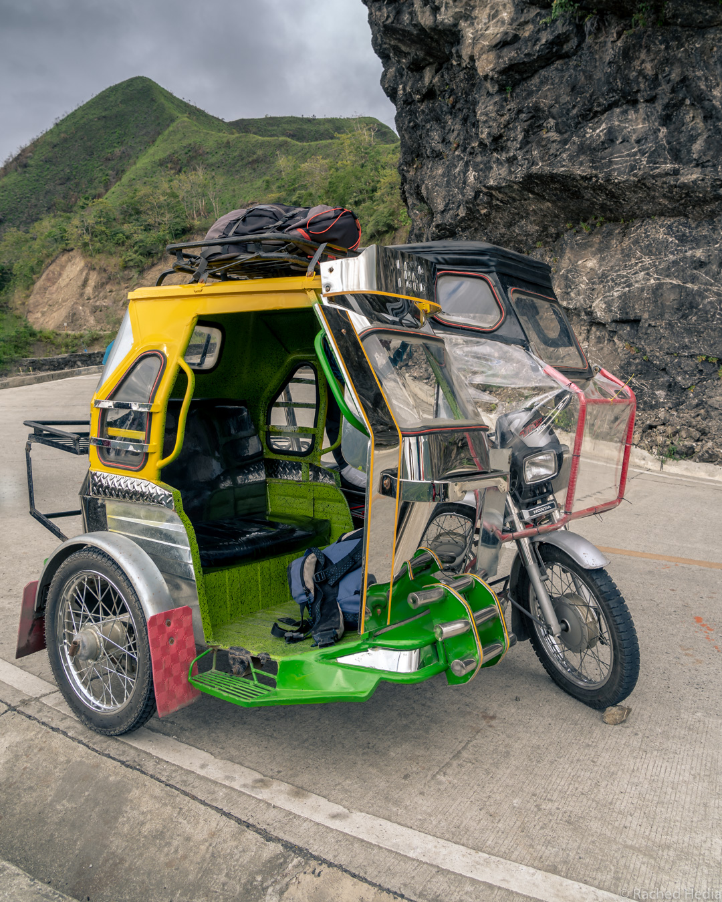
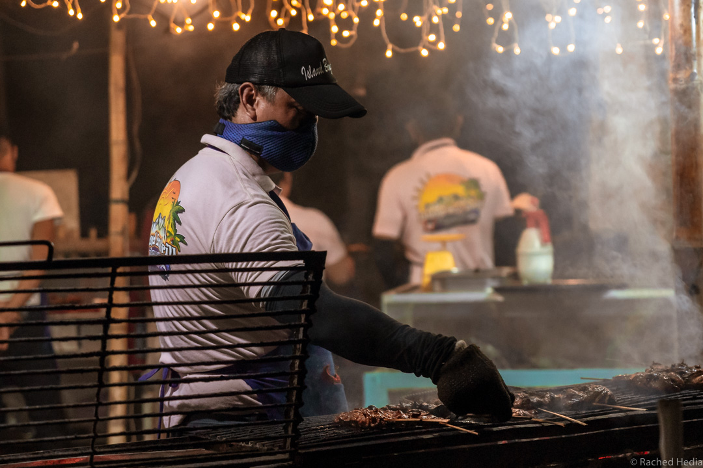
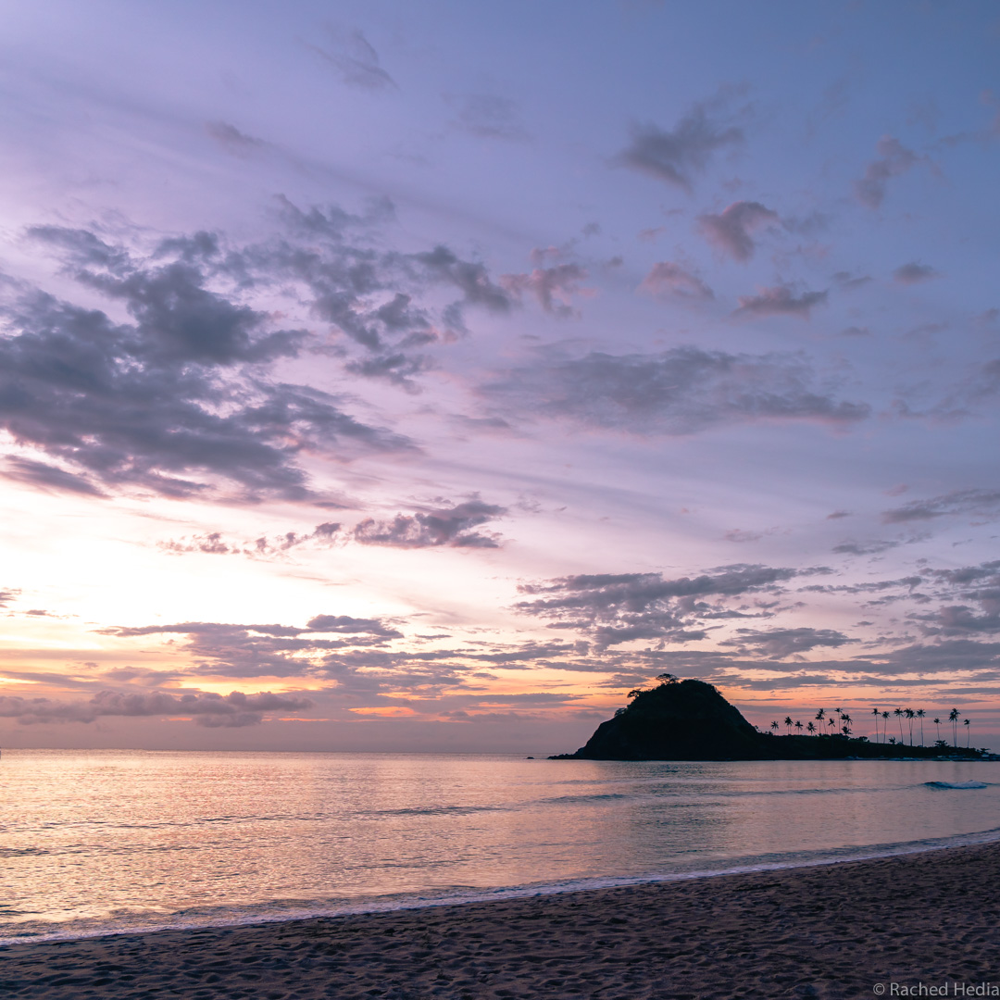
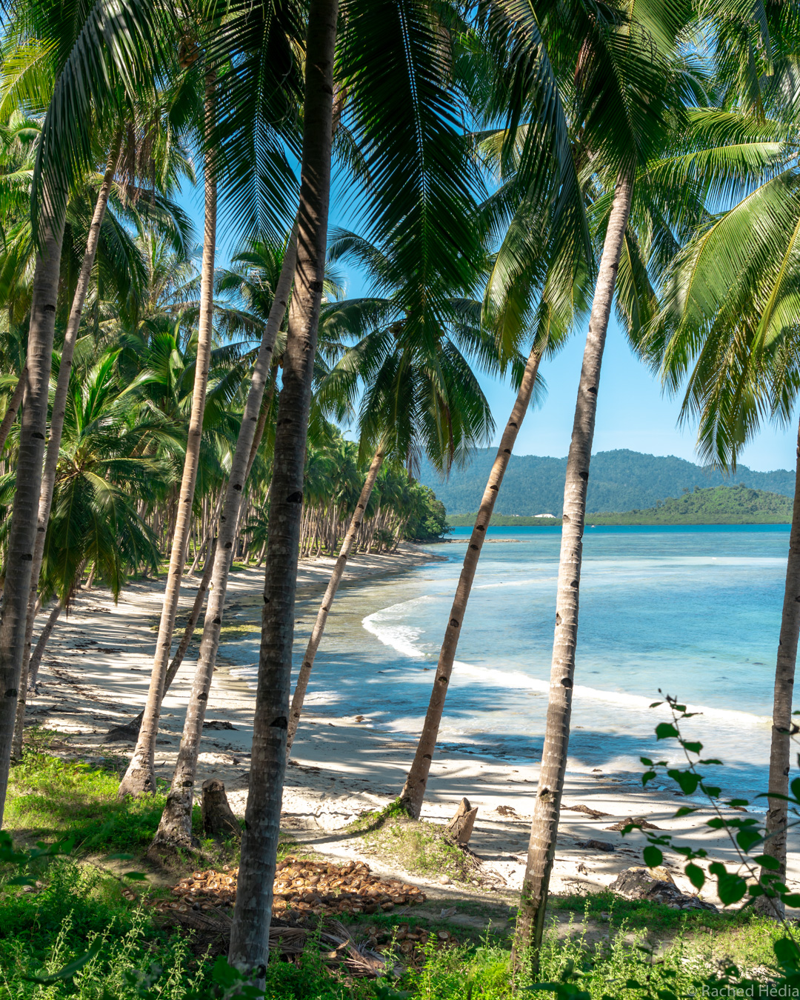
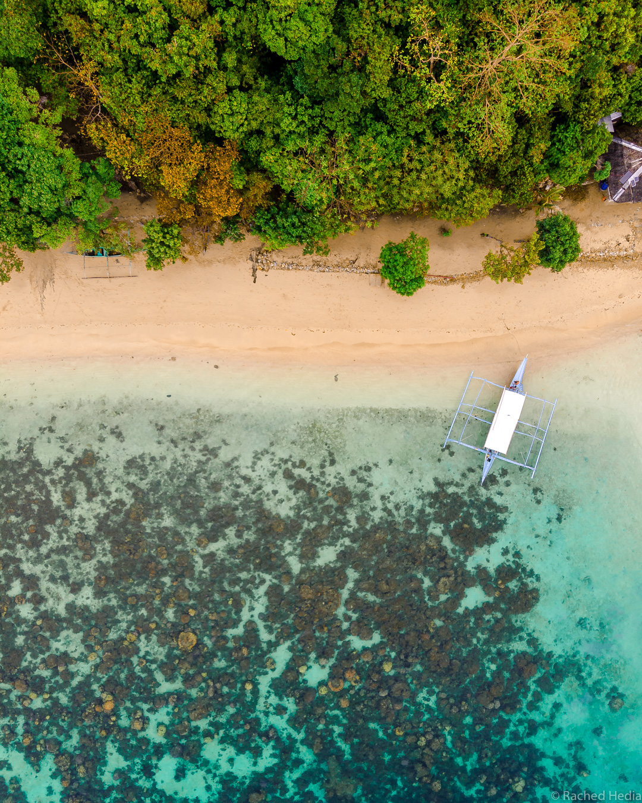
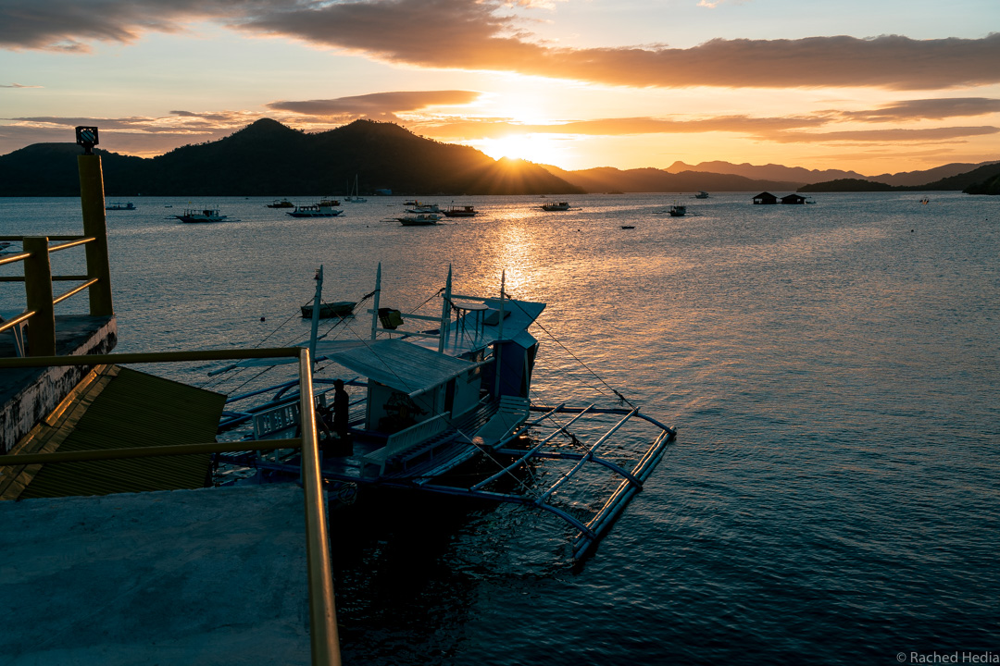
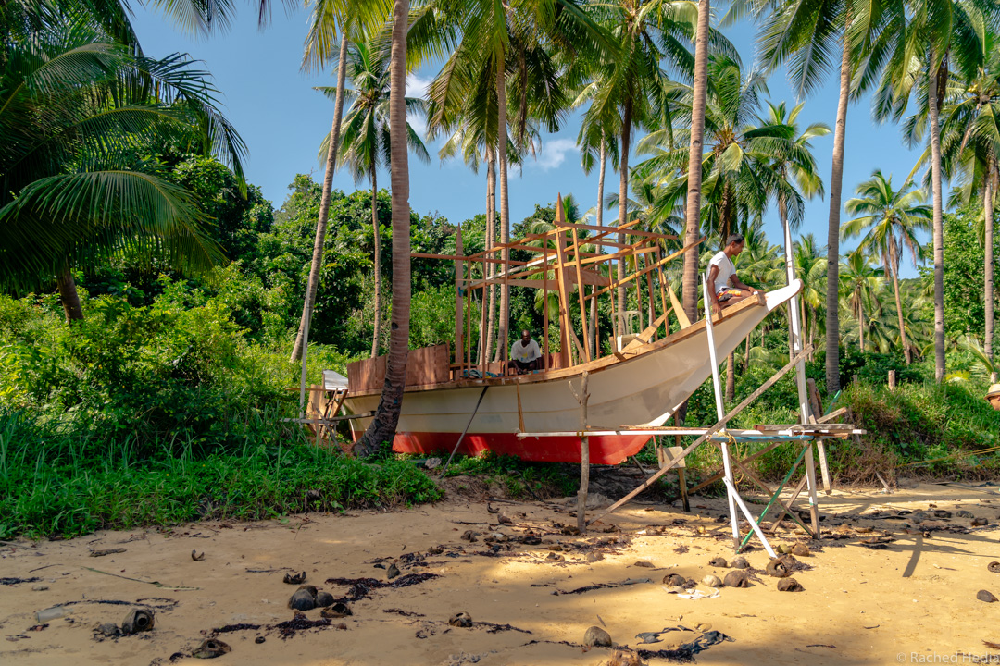

Les Philippines : le paradis sur terre
Un tour du monde ne serait pas complet sans un passage par la plage, surtout quand on habite en ville à l’année. Justement on commençait à se dire qu’il était temps de sortir les tongs. On a donc revu notre itinéraire. Finalement le Népal ce ne sera pas pour cette fois. Direction les Philippines !
Vous êtes prêts à découvrir ce voyage au paradis ?
Notre avis sur les Philippines
Les philippins, leurs sourires et leur bienveillance
Avant de partir, on nous disait souvent “vous verrez les philippins sont très gentils”.
Et c’est vrai, ils ont vraiment la main sur le coeur. Plusieurs fois dans le voyage, si ce n’est pas tous les jours, on se faisait la remarque.
Aucune timidité, on vient facilement vous parler. Et si vous avez le moindre problème, pour vous rendre quelque part ou réserver un hébergement par exemple, vous trouverez toujours une personne qui vous tendra la main.
Et ils prennent volontiers la pose devant l’objectif avec un grand sourire. Y a qu’à demander !

Le soir de Noël, nous attendions notre taxi à Manille avant de prendre un bus de nuit. Nous étions comme deux malheureux dans cette rue déserte derrière un centre commercial qui avait déjà fermé ses portes depuis une heure au moins. Le vigile qui surveillait l’entrée de l’hôtel juste en face est venu s’assurer que tout allait bien et nous proposer d’appeler un taxi pour nous si besoin.
Le sport national
Question à 2 pesos : quel est le sport national aux Philippines ?
Tic tac tic tac…le basket !

Mais oui, dans n’importe quel village, même perdu au beau milieu des rizières, si il y a âme qui vive, il y a un terrain de basket. C’est la base !
Du coup, il est facile d’assister à un match de basket où que l’on soit. Une façon toute simple de partager un bon moment avec les locaux.
La protection de l’environnement
Typhons, tremblements de terre, inondations, ce petit coin de paradis est malheureusement l’un des endroits de la planète le plus touché par les catastrophes naturelles. C’est sûrement une des raisons pour lesquelles le pays se soucie un peu plus que ses voisins de la protection de l’environnement.
En tout cas, on a trouvé plusieurs endroits à travers le pays où il y avait des initiatives pour la planète. Youpi ! Un exemple de plus qui démontre que le problème de l’environnement ne nécessite pas forcément de l’argent mais plutôt de bonnes habitudes à prendre.
Je vous donne quelques exemples des bonnes actions que nous avons croisées en route :
1. les bouteilles en verre sont consignées ;
2. plusieurs bars à travers le pays utilisent des pailles en inox, voir certains ne donnent pas de paille du tout ;
3. à Port Barton, sur l’île de Palawan : les touristes doivent payer à leur arrivée au village une écotaxe de seulement 50 PHP/pers (soit 0,82 €) en échange d’une carte. Cette carte doit être obligatoirement présentée à chaque fois que vous voulez embarquer sur un bateau pour une excursion. L’argent récupéré sert à financer des projets locaux pour la protection de l’océan, le traitement des déchets, etc ;
4. et pour finir, l’île de Boracay, destination favorite des Philippines pour ses plages de sable blanc, a été fermée aux touristes pendant 6 mois pour faire le grand ménage. L’île croulait sous les déchets. Les hôtels construits illégalement sur des zones protégées ont été détruits.
Côté transport
Les transports, à l’exception des minivans, ne sont pas de la première jeunesse et peu confortables. Dans les bus de nuit, par exemple, pas de couchette, on voyage assis. De même que les routes mineures ne sont pas goudronnées. Donc on est parfois un peu bringuebalé. Mais ça fait partie de l’aventure.
La vitesse moyenne est de 70 km/h. Donc vous passerez sans doute un peu de temps dans les transports. Mais vous avez le temps, vous êtes en vacances haha !

On est déjà descendu à 30 km/h…3 heures pour faire 100 km. C’était le jour de mon anniversaire. Je crois que je n’oublierai pas cette journée où nous avions pris deux Jeepneys, un bus, un tricycle avant de finir dans ce bus-escargot, bondé…une merveilleuse journée.
1. Pour les petits trajets (de moins d’une heure), il y a le tricycle ou tricycle motorisé - traduction littérale de l’anglais. Rien de plus simple pour en prendre un, il y en a partout en circulation. Demandez quand même le tarif avant de monter et n’hésitez pas à négocier.
Les prix varient selon la distance parcourue et la qualité de la route : de 30 PHP (0,49 €) pour une petite course à 500 PHP (8,30 €) pour un trajet de 20 km.
2. Pour des trajets de 1 à 2 heures, ou à Manille, la capitale, il y a les Jeepneys. Ce sont des jeeps datant de la deuxième guerre mondiale, laissées par l’armée américaine. Je vous avais prévenu les véhicules ne datent pas d’hier.
On y monte par l’arrière. A l’intérieur, deux banquettes pas très larges, une à gauche, une à droite, qui s’étendent sur toute la longueur. Et tant quand il y a de la “place”, on fait monter les gens. Croyez-moi il y a toujours de la place…
Les Jeepneys passent régulièrement à des arrêts donnés. Mieux vaut demander pour s’assurer de monter dans le bon. Les prix sont fixes et vous payez avant de descendre.
Une fois, nous avons pris un Jeepney dont la capacité était de 18 passagers. La plupart des personnes à bord voyageaient avec des petits sacs à leurs pieds. Nous étions les seuls deux touristes avec nos gros sacs à dos entre les jambes. Plus serré, tu moeurs ! Le chauffeur n’était pourtant pas très content parce qu’on ne rentrait qu’à 8 sur notre banquette au lieu de 9.
3. Pour des trajets de plusieurs heures, il y a les bus ou les minivans.
Pour les minivans, nous avons réservé les trajets directement auprès des hôtels.
Pour le seul bus de nuit que nous avons pris pour aller à Banaue, nous avons acheté nos billets en ligne avec la compagnie Ohayami. Et là bien entendu, horaires et prix fixes.
Minivan de Port Barton à Puerto Princesa : 500 PHP/pers (8,30 €) - 160 km.
Bus de nuit de Manille à Banaue : 600 PHP/pers (10 €) - 390 km.
4. Pour les trajets vers ou depuis l’aéroport, il y a le taxi.
Les taxis sont bon marché. La file d’attente était longue à notre arrivée à Manille. Pour le retour, nous avons donc utilisé l’application Grab (le Uber local) qui fonctionne très bien et donc que je recommande.
Taxi de l’aéroport de Manille à notre hébergement : 300 PHP (5€) - 5 km.
Côté nourriture
Du riz, du riz et encore du riz. Oui trois fois par jour, à tous les repas. Le moins qu’on puisse dire c’est que ça cale.
Une petite variante tout de même pour le petit-déjeuner : le pancake à la banane, plus ou moins bon selon les endroits.
En dehors de ça, rien qui mette vraiment l’eau à la bouche. Le plus souvent des grillades de viande ou de poisson…accompagné de riz…Oups désolé pour la répétition !

J’oublie quand même les fruits et les jus de fruits frais (mangue, banane, ananas), toujours très rafraîchissants.
En ce qui concerne le service à table, prenez votre mal en patience car c’est souvent très très lent. Ils mettent tout leur coeur à vous préparer un bon repas… Je n’ai pas trouvé d’autre explication !
Des îles paradisiaques
Je vous avais promis le paradis ?
Et bien nous y voilà !
Les Philippines sont un archipel de plus de 7000 îles dont environ 2000 sont habitées. Il faudrait plusieurs vies pour toutes les visiter. Mais elles sont toutes plus belles les unes que les autres donc peu importe celle que vous choisirez, vous ne serez pas déçus.
Des plages de sable blanc, des lagons aux eaux chaudes et turquoises, des couchers de soleil parmi les plus beaux au monde…tous les ingrédients d’un petit éden sont là.


L’une des activités phares du pays est de faire la tournée des îlots inhabités et des plages désertes, le island hopping.

Vous embarquez pour la journée à bord d’une bangka, bateau traditionnel philippin, qui ressemble à un trimaran avec des flotteurs en bambou. Selon le tour, plusieurs arrêts sont prévus pour observer coraux, poissons, tortues et étoiles de mer en masque et tuba. Quand vient l’heure du repas, le bateau accoste sur un petit banc de sable pour vous servir un délicieux poisson grillé, cuit sur le bateau. Et la journée se poursuit sur un rythme détendu. Le bateau fait généralement entre 5 et 8 arrêts. De quoi en prendre plein les yeux. Quand vous revenez au port, le soleil commence à décliner et illumine les paysages d’une lumière dorée. Non, ce n’était pas un rêve !

Pour un aperçu en son et en image, regardez notre première Travel Video.
Les rizières en terrasse de Batad
Les plages sont sans doute l’une des raisons principales de se rendre aux Philippines. Mais il y a aussi un endroit à ne pas manquer lors de votre séjour : les rizières en terrasse de Batad.
Situées au centre de l’île de Luçon, dans la province d’Ifugao, elles sont inscrites au patrimoine mondial de l’UNESCO. C’est un véritable amphithéâtre de rizières qui vous attend. Les terrasses ont été construites il y a 2000 ans sur les flancs des montagnes. C’est un endroit incroyable et qui vous permettra d’en apprendre davantage sur la culture du riz et l’entretien des terrasses. Et ce n’est pas une mince affaire !
Pour vous y rendre, vous devez prendre un bus de nuit de Manille à Banaue. De là, vous pouvez aller en tricycle de Banaue à Batad ou bien faire un trek de 2 ou 3 jours au départ de Banaue. Nous avons opté pour un magnifique trek de 2 jours que je ne manquerai pas de vous détailler dans le prochain post.
Conseils pour voyager tranquille aux Philippines
1. Planifier son itinéraire à l’avance
Souvent vacances en Asie rime avec organisation sans prise de tête et réservation dernière minute. Si c’est vrai pour la plupart des pays en Asie, ça n’est pas le cas pour les Philippines. Prévoyez donc votre itinéraire à l’avance. Choisir les îles à visiter peut déjà vous prendre un certain temps.
Il y a 3 aéroports internationaux aux Philippines : Manille, Cebu et Clark. Cebu est une meilleure option que Manille si vous souhaitez vous rendre sur les îles comme Bohol, Siquijor ou Siargao. Cela peut donc vous faire gagner du temps de prendre un vol international pour Cebu plutôt que Manille. D’autant que Manille présente peu d’intérêt.
Etudiez en détail les possibilités de transport pour vous rendre d’une île à une autre. Y a-t-il des liaisons directes ou faut-il transiter par une autre île ?
A titre d’exemple, je vous livre tous les détails de notre itinéraire dans notre prochain post.
Une fois votre itinéraire fait, vous pouvez choisir de réserver en avance ou attendre le dernier moment. La réservation de dernière minute ne pose aucun problème pour les hébergements, les transports terrestres et les ferries.
En revanche si vous avez prévu de prendre l’avion pour passer d’une île à une autre, les prix ne faisant qu’augmenter avec le temps, il est préférable d’acheter vos billets sans tarder.
2. Ne pas prévoir trop d’îles
Ne chargez pas trop votre planning au risque de revenir plus fatigués que détendus de vos vacances.
Pour passer d’une île à une autre, c’est déjà une à deux journées de perdues. Et une fois sur l’île, il y a souvent des transports à prendre pour visiter les différents sites.
N’oubliez pas que les transports terrestres sont lents. Par exemple, il faut 4 heures en minivan pour parcourir les 180 kilomètres de El Nido à Port Barton, sur l’île de Palawan.
Comptez donc en moyenne 4 îles pour 3 ou 4 semaines si vous ne voulez pas vous presser.
3. Prévoir un plus gros budget que pour le reste de l’Asie
Cela coûte plus cher de voyager aux Philippines que dans le reste de l’Asie.
Les transports et les hébergements sont plus chers et les standards sont plus bas. En d’autres termes, pour le même prix ailleurs en Asie, vous parcourrez moins de kilomètres et le confort de votre hébergement sera inférieur.
Prendre le bateau plutôt que l’avion pour passer d’une île à une autre peut déjà vous faire économiser sur les transports.
Pour les hébergements, il n’y a pas de règle absolue mais on a souvent eu des prix plus intéressants sur place. Il est même possible de négocier. Vous ne ferez donc pas nécessairement des économies en réservant votre hébergement à l’avance.
Nous avions estimé un budget quotidien de 30 €/pers. Notre budget quotidien était finalement de 37 €/pers tout compris (transport/hébergement/nourriture/activités - hors vols internationaux).
4. Acheter une carte sim
L’internet est mauvais aux Philippines. La connection est lente et il y a souvent des coupures. Donc il arrive fréquemment que vous soyez plusieurs jours sans internet.
Quand on est tourdumondiste, qu’on n’a pas de guide du routard pour chaque pays et qu’on souhaite donner des nouvelles à nos proches, c’est parfois frustrant de se trouver sans connection. Et là vous avez envie de me dire : “bien sûr et on va te plaindre !”.
Donc si vous savez que vous aurez besoin d’internet, je vous conseille fortement d’acheter une carte sim à votre arrivée aux Philippines. On s’est dit après coup que c’est ce qu’on aurait dû faire. Ca vous servira dès le premier jour pour réserver un Grab à l’aéroport !
Le prix d’une carte sim : 1000 PHP (16,50 €).
5. Réserver une excursion en bateau
Si vous avez lu le début de l’article, vous savez maintenant ce qu’est le island hopping.

Pour la réservation, vous pouvez voir auprès d’une agence ou directement avec votre hôtel. Les prix sont assez uniformes quelque soit l’endroit où l’on réserve donc pas la peine de se fatiguer à faire la chasse au meilleur prix. Et vous pouvez réserver la veille sans aucun problème.
Quelque soit votre intermédiaire pour la réservation, vous serez de toute façon regroupés sur les mêmes bateaux en fonction de l’excursion choisie.
Comptez 1200 PHP/pers (20 €) pour une excursion à la journée (masque, tuba et repas compris).
Les tours sont numérotés A, B, C, D, etc. N’ayez pas peur de vous lancer, toutes les excursions valent le coup !
Néanmoins, nous avons remarqué que sur les tours comptant moins d’arrêts, nous étions beaucoup moins nombreux sur le bateau. 10 personnes par bateau voir moins contre 18 à 20 personnes pour les tours tout-en-un, dits ultimate, qui font jusqu’à 8 arrêts.
Donc à vous de choisir si vous préférez tout voir ou en voir moins en plus petit comité et sur un rythme plus cool.
6. Ne pas donner d’argent aux enfants
Aux Philippines, malheureusement comme dans beaucoup d’autres pays d’Asie, vous croiserez sans doute des enfants faisant la manche. Pour se sentir le coeur moins lourd, on a envie de leur donner un peu d’argent. Même si ça part d’une bonne intention, ce n’est pas leur rendre service.
Si vous donnez de l’argent à un enfant dans la rue, il pensera plus utile de continuer à faire la manche auprès des touristes que d’aller à l’école. Et si il ne va pas à l’école, les chances de gagner correctement sa vie plus tard diminueront encore.
Donc si vous voulez aider les enfants, il vaut mieux donner de l’argent aux associations locales qui soutiennent les écoles.
Voilà, j’espère qu’après avoir lu ces quelques conseils vous apprécierez d’autant plus votre séjour aux Philippines.
Pour nous, ce voyage aura été une vraie pause au paradis. Pour avoir voyager au Vietnam et au Cambodge par la suite, les plages ne seront jamais aussi idylliques. Et ici contrairement au reste des îles du Pacifique, le rêve est accessible sans faire un trou énorme dans le porte monnaie.
Donc sans hésiter nous y retournerons dès que possible !
S'abonner à Le Monde Etcetera
Recevez les derniers posts directement dans votre boîte mail !